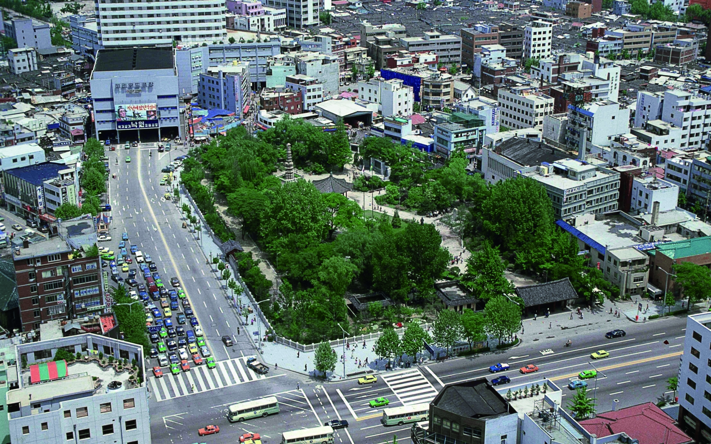
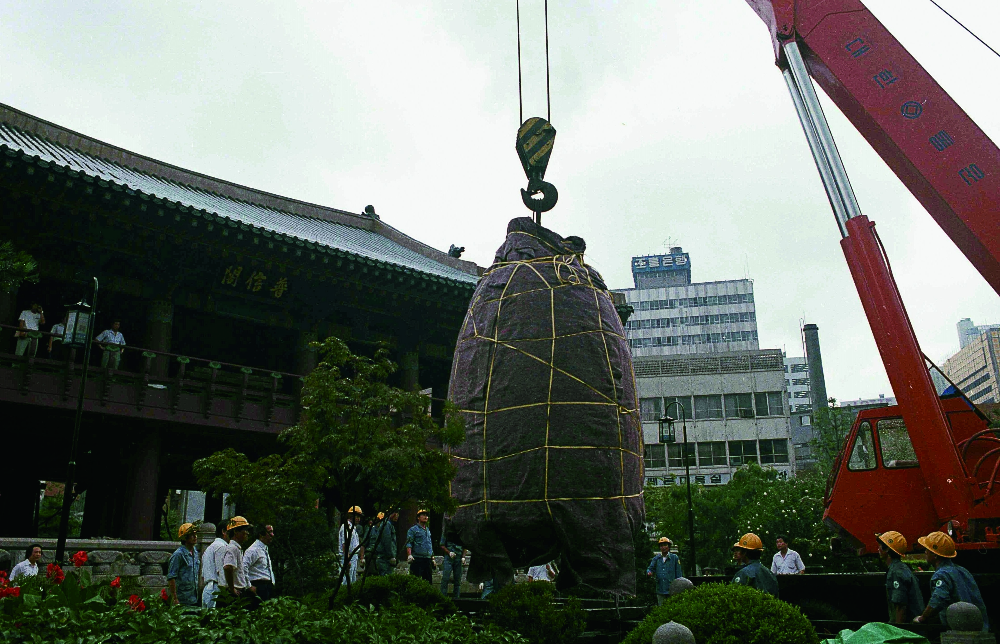
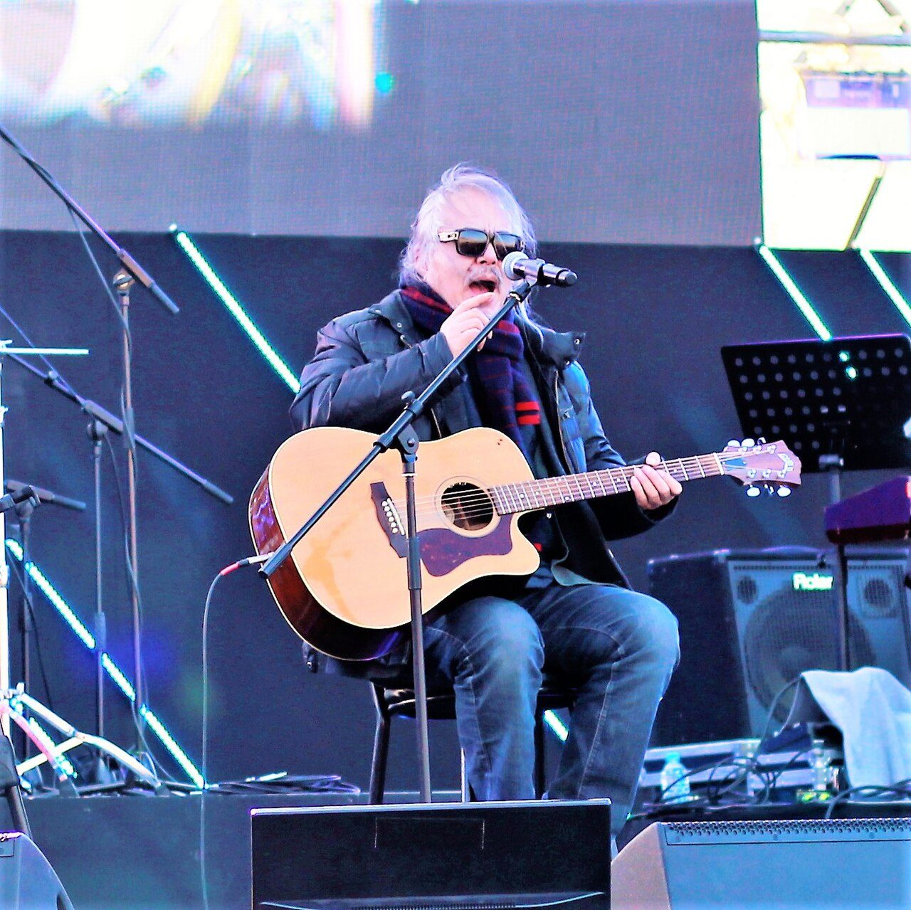
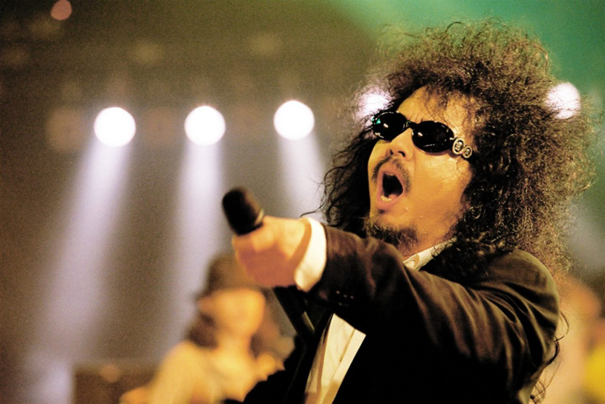

野菊花들국화 · Deulgukhwa · 韩国摇滚 · 1983–1989
乐队的名字，来自键盘手嘴里嚼着的一块口香糖。[2] 一九八五年，他们的第一张专辑在电视上几乎看不到的情况下卖了八十万张[1][28]——靠电台里的点播、一盒又一盒传着听的磁带，和一场场挤满人的小剧场。二十二年后，韩国一家报纸请乐评人评选本国流行音乐百大专辑，第一名还是这张。[1][7]
档案乐队速览
- 名字
- 들국화（Deulgukhwa），字面意思是「野菊花」。名字取自键盘手许成旭当时嚼的口香糖品牌[2]
- 成军
- 首尔。英文维基记 1982 年 8 月[1]，韩文维基记 1983 年 10 月[2]，MusicBrainz 记 1983 年[3]
- 首演
- 钟路，皮卡迪利影院旁的世宗文化会馆（英文维基记作 1982 年 11 月）[1]
- 成军三人
- 全仁权（主唱）、崔圣园（贝斯）、许成旭（键盘）[2]
- 首专录音五人
- 上述三人 ＋ 赵德焕（吉他）、朱灿权（鼓，时为录音乐手）[2][12][31]——这不是成军阵容，见来源分歧第 15 条
- 活动期
- 1983–1989，另有 1995–1999、2012–2013 两段重组[2]
- 称号
- 「韩国的披头士」[1][6]
- 奖项
- 1986 金唱片奖专辑本赏[1]；2021 第 18 届韩国大众音乐奖功劳奖[2]
历史一块口香糖，和一个没上电视的八十万张


一九八〇年代的韩国，主流流行音乐是软绵绵的抒情歌与 Trot，电视是最大的出口，而出口的入口由审查把着。[1][2] 野菊花走的是另一条路：电台、现场，和磁带。
他们的第一张专辑，在电视上几乎看不到——主流节目不接受这种嘶吼般的唱法，他们自己也不肯上（「被禁」与「主动回避出演」两说并存，见来源分歧第 14 条）[6][28][29]，却卖了八十万张[1]。把它送到几十万人耳朵里的，是电台里一遍遍的点播、一场场坐满的小剧场，和一盒又一盒转录来转录去的磁带。韩文维基把这件事写成一句话：韩国第一次有人证明了地下音乐的可能性。[2]
时间线
- 1979主唱全仁权先以另一支乐队出道：民谣组合 따로 또 같이（意为「各自，又在一起」）的主唱兼吉他手，同年出版专辑《맴도는 얼굴》；他对自己在其中的表现极不满意，后来回忆说曾想溜进录音棚放火、烧掉母带[24][25]
- 1983.10全仁权（主唱）、许成旭（键盘）、崔圣园（贝斯）三人成军；队名来自许成旭咀嚼的口香糖[2]（成军年份另有 1982／1985 两说，见来源分歧第 1 条）
- 1983.11以「野菊花」之名的第一场演出：首尔钟路 3 街的 SM（韩文记作 종로 3가 SM），队名从这一场起正式启用[27][26]；另有资料记作「钟路皮卡迪利剧院旁的 SM」，见来源分歧第 1 条
- 1985五个人凑齐，录下首张专辑《행진》——但这是录音阵容，不是成军阵容：吉他赵德焕于此前后加入，鼓手朱灿权是以录音乐手（session）身份参与，1986 年第二张专辑起才成为正式成员[12][27]（首专吉他手另有崔九熙、孙振泰一说，见来源分歧第 8、15 条）
- 1985.09首张专辑出版，收录〈那就是我的世界〉〈행진〉〈매일 그대와〉等；全辑走红[2][3]
- 1986获金唱片奖专辑本赏[1]；第二张专辑《너랑 나랑》11 月出版[2][3]
- 1987/89因成员音乐理念分歧宣布解散（年份两处记载不一，见来源分歧）[1][2]
- 1995.04全仁权率新阵容重组，出版第三张专辑《우리》[2][3]
- 1997/98键盘手许成旭在加拿大因车祸去世（年份两处记载不一）；乐队以此为契机重启活动[1][2]
- 2000再度解散[2]
- 1997–2008主唱全仁权因毒品三度被捕（1997／1999／2007），2007 年 12 月被判有期徒刑一年，2008 年 9 月刑满出狱；此后入疗养院戒断，2011 年 8 月出院[33][34]
- 2007.08《京乡新闻》评选「韩国大众音乐 100 大专辑」，首张专辑列第一位[1][7]
- 2012原班三人重组，全年巡演[1][8]
- 2013.10.20鼓手朱灿权突然倒下送医不治，享年 58；死因至今未查明[12][13]
- 2013.12.06同名专辑《들국화》出版，成为朱灿权的遗作[1][3]
- 2014.08.20全仁权在记者会上表示不再重组[2]
- 2016.11.14创始吉他手赵德焕因十二指肠癌去世[14]
- 2018.02全仁权在平昌冬奥会开幕式上演唱约翰·列侬的《Imagine》[9]
- 2021获第 18 届韩国大众音乐奖功劳奖[2]


成员五个名字，和后来凑不齐的人




| 姓名 | 位置 | 在队情况 |
|---|---|---|
| 全仁权 전인권 / Jeon In-kwon | 主唱 | 核心成员，1954 年生于汉城[2][22]。从小想当画家，高中只读了一年便辍学，跟着二哥学会弹吉他[22]；1979 年先以民谣组合 따로 또 같이（各自又在一起）主唱兼吉他手身份出道、出版专辑《맴도는 얼굴》[23][24][25]；1987 年起因毒品先后五次被处罚[33]，其中 1997／1999／2007 三度被捕，2007 年 12 月被判有期徒刑一年、2008 年 9 月刑满出狱[34][35]；2010–2011 年入全南一家疗养院戒断 1 年 6 个月，出院后戒毒戒酒，2012 年重组时受访称已不再碰毒品[33] |
| 崔圣园 최성원 / Choi Seong-won | 贝斯 | 核心成员，〈那就是我的世界〉词曲作者[4][5] |
| 许成旭 허성욱 / Heo Seong-wook | 键盘 | 创队三人之一，1997/98 年因车祸去世[1][2] |
| 赵德焕 조덕환 / Jo Deok-hwan | 吉他 | 非成军三人之一，入队年份有 1983／1985 两说（韩文维基本人条目称其为「创团成员之一」[31]）；首专中的〈아침이 밝아올 때까지〉〈세계로 가는 기차〉出自他手[31][16]。2016 年因十二指肠癌去世[14] |
| 朱灿权 주찬권 / Joo Chan-kwon | 鼓 | 最晚到的一位：1983 年乐队成军时他还在「申重铉与三个旅人」（신중현과 세 나그네）[12]；1985 年首张专辑只以录音乐手身份参与，1986 年第二张专辑《너랑 나랑》起才正式入队[12][1]；2013 年突然离世，死因未查明[12] |
| 崔九熙 최구희 / Choi Goo-hee | 吉他 | 1986 年第二张专辑时期[1] |
| 孙振泰 손진태 / Son Jin-tae | 吉他 | 1986 年加入[1] |
注：仅两人有可核实的汉字表记——全仁權（1992-01-31《东亚日报》标题「대마초흡연 구속수감 가수全仁權(전인권) 보석허가」，经韩文维基引用[12]；英文维基 Jeon In-kwon 条目 Hanja 字段[9]）、崔聖園（韩文维基 최성원 (음악가) 条目正文首句[15]）。其余三人的汉字名未见于可靠来源，表中所列为音译，正式写法以韩文原名与罗马字为准。
经典本期歌曲：〈那就是我的世界〉
1985 年 · 首张专辑 · 词曲：崔圣园 · 演唱：全仁权[4][5] · 时长 5:29（MusicBrainz 记 329.3 秒[3]／网易云记 330.8 秒[5]）
为什么是这一首
一、它写的是「被说是天真的人」。歌词开头就是别人的评价：「你说我不太懂这个世界／用稍许担心的眼神／用略带抱歉的笑容」。副歌回答：那些哭过笑过的梦，「那就是我的世界」。[4] 在军政府年代的韩国，这句「我不后悔」被年轻人当成自己的话来唱。[1][6]
二、词曲出自贝斯手，嗓子出自主唱。崔圣园写词写曲，全仁权编曲并主唱[4]——一个写，一个喊。
三、它所在的专辑，是后来评选里的第一名。2007 年《京乡新闻》的韩国大众音乐百大专辑评选，首张专辑列第一[1][7]。
四、它比乐队出道得更早。首张专辑出版的前一年，〈那就是我的世界〉已经收在合辑《우리 노래 전시회 I》里，当时由全仁权演唱[16]——崔圣园写它时还在服役，写的是「当兵时、或退伍那一刻的心情」[16]。
五、它活过了乐队本身。乐队最后一次重组以鼓手去世告终，2014 年主唱宣布不再重组[2]；但这首歌至今仍在韩国电台里播。[6]
需要说明的是：韩国并没有一份「野菊花最有名的歌」的权威排名，韩文维基的代表曲一栏并列了七首[16]。选这一首，是栏目的编辑判断，理由在上面；详情见来源分歧第 10 条。
歌词（节选）
延伸再听两首
回声三十年后，一部电视剧又把它们唱了一遍
2015 年，tvN 播出《请回答1988》。它沿用这个系列一贯的做法：把当年的老歌重新翻唱。其中两张单曲，都和这支乐队有关[17]——
OST Part 8 〈매일 그대와〉（每日与你）：崔圣园词曲，原唱栏写的是野菊花，由 Girl's Day 素珍翻唱，2015 年 12 月 26 日发行[17][19]。
OST Part 2 〈걱정말아요 그대〉（你不要担心）：全仁权词曲，原唱栏写的是全仁权本人，由李笛翻唱，2015 年 11 月 7 日发行，次年拿到 Mnet 亚洲音乐奖最佳 OST[17][18]。
至于这期的主角〈那就是我的世界〉：韩流媒体 The Kraze 在 2018 年的乐队专题里直接称它是野菊花「最有名的歌」，并说它出现在《请回答1988》里[6]——不过它并没有被做成该剧的 OST 单曲，剧里单独发行的翻唱版是上面那两首。「最有名」是这一家媒体的说法，不是榜单结论。
这里有一层要说清楚：〈你不要担心〉并不是野菊花的歌。它是全仁权 2004 年个人专辑《전인권과 안 싸우는 사람들》里的作品，写在他离婚之后、最困难的那段日子[18][20]；二〇一三年，野菊花把它重新录了一遍，收进那张以鼓手遗作告终的同名专辑[18][21]。乐队散了三十年，最后被一代人记住的方式，是主唱自己写的一句安慰。
那重录过一遍，为什么还算不上「野菊花的歌」？看三件事——
一、词曲和首唱都不在乐队名下。它是全仁权个人第四张专辑（2004-11-13）的主打歌，词、曲、唱都是他一个人；那年乐队已经散了十几年。韩文维基把他的个人正规专辑按 1988／1991／2003／2004 单独列成一条线，和野菊花的作品完全分开[20]。
二、2013 年那张《들국화》是双 CD。CD1 是新歌——鼓手遗作那批；CD2 是旧作重录，既重录了乐队自己的歌（행진、그것만이 내 세상、매일 그대와），也重录了主唱的 solo 曲（〈你不要担心〉，以及 2003 年个人专辑的同名曲 다시 이제부터）。〈你不要担心〉在 CD2[21]。
三、剧里的原唱栏写的也是全仁权本人。写「野菊花」的是另一首〈매일 그대와〉[17]。
所以准确的说法是：野菊花唱过它，但它不是野菊花的歌。这两件事不矛盾，但混在一起说，就会把主唱后半生最重要的那首歌，记到一支只存在了几年的乐队头上。
短片与这首歌等长的资料短片
无声资料版，长度与〈那就是我的世界〉全曲一致。建议另开播放器同步播放这首歌。
存疑来源分歧（如实记录）
1 · 成军时间：三种说法，差的其实是「从哪一步算起」。英文维基记 1982 年 8 月三人聚齐并在钟路首演[1]；韩文维基正文记 1983 年 10 月[2]，MusicBrainz 记 1983 年[3]；2025 年重制版 LP 的官方曲目说明写得更细——1982 年 8 月梨村洞「깨스등」首演起步，1983 年赵德焕加入，1983 年 11 月钟路 3 街 SM 演出起才正式启用「들국화」这个队名[27]；而韩文维基首段又写「1985 年成立」（按出唱片算），与同条目正文自相矛盾[2]，英文维基 Jeon In-kwon 条目同样写 1985 年[23]。最有分量的一条是主唱本人的口径：2025 年全仁权接受《每日经济》专访时说，「以野菊花之名的第一场演出，是一九八三年在首尔钟路」[26]。本页正文与片子都押 1983。
2 · 首张专辑发行日：MusicBrainz 与 LyricFind 记 1985 年 9 月 10 日[3][10]，Shazam 记 9 月 1 日[11]，韩文维基只写「1985 年 9 月」[2]。另有二手来源写作 1986 年 9 月，与其余各说相差一年，本页不采用。
3 · 解散年份：英文维基正文写「成军五年后，1989 年宣布解散」——这句话内部自相矛盾（若 1982 成军，五年后应为 1987）[1]；韩文维基正文记 1987 年宣布解散，而信息框活动期写 1983–1989[2]。
4 · 键盘手去世年份：英文维基记 1998 年[1]，韩文维基记 1997 年在加拿大车祸去世[2]。
5 · 全仁权生日：英文维基记 1954 年 9 月 4 日[9]，韩文维基记 1954 年 9 月 30 日[2]。
6 · 首张专辑的名称：韩文维基专辑条目与英文维基均称《행진》（March）[1][2]，MusicBrainz 的发行组标题则为《들국화》[3]。
7 · 鼓手的死因：韩文维基 주찬권 条目记为心脏麻痹导致的猝死（引 Newsis 2013-10-21）[12]；TV Report 2023 年十周年回顾则写所属公司称「死因不明」，医院只推测心脏方面有问题，家属拒绝尸检[13]。本页正文取较保守的「死因未查明」。早期资料常见的「癌症」说法不成立——死于癌症的是吉他手赵德焕（十二指肠癌，2016 年）。
8 · 鼓手何时正式入队：韩文维基乐队条目记「1985 年吉他与鼓手加入」[2]，同站鼓手本人条目却记「1985 年首张专辑时只是录音乐手，1986 年第二张专辑起才正式成为成员」[12]；英文维基成员表把他的在队时间记为 1986–1989[1]。
9 · 首张专辑的销量：英文维基记 80 万张[1]；韩文维基《행진》专辑条目则写明「估计约 180 万张」，引《朝鲜日报》[16]。两者相差一倍以上，本页正文沿用较常见的 80 万口径，并在此并列存疑。
10 · 哪一首才是「最有名的歌」，没有定论。韩文维基的「代表曲」一栏并列七首（〈행진〉〈매일 그대와〉〈세계로 가는 기차〉〈그것만이 내 세상〉〈제발〉〈사노라면〉〈걱정 말아요 그대〉）[16]；英文维基首段只点名 〈그것만이 내 세상〉 与 〈행진〉 两首[1]；乐评人 황정은 在《서브》的评论里，把「〈그것만이 내 세상〉中全仁权的呐喊」与「〈매일 그대와〉中崔圣园的声音」并列为这张专辑的两个代表瞬间[16]。本页把〈那就是我的世界〉选作「本期歌曲」是编辑判断，不是任何榜单的结论——唯一有权威的排名是发给专辑的（2007 年百大专辑第一），不是发给单曲的。
11 · 主唱的生年：韩文维基与英文维基都记 1954 年（日期另有 9 月 4 日／9 月 30 日两说，见第 5 条）[2][9]；中文媒体（《南方人物周刊》2005 年报道及转引它的百科条目）记 1952 年[22]。本页正文取 1954。
12 · 「十九岁听到 Beatles 的《Imagine》」这个说法里的歌名错了。中文报道原文写「Beatles 的《IMAGINE》」[22]，但《Imagine》是约翰·列侬 1971 年的个人作品，不是披头士的歌；同一句的后半段「决定要当一个约翰·列侬那样的歌手」也指向列侬本人。本片采用「约翰·列侬的《Imagine》」。（附一条旁证：2018 年平昌冬奥会开幕式上，全仁权正是与三位后辈合唱了列侬的《Imagine》[23]。）
13 · 主唱在野菊花之前的那支乐队叫什么。韩文维基 전인권 条目记为现代民谣组合 따로 또 같이——「1979 年以该组合的主唱兼吉他手正式出道」，同年出版首张专辑《맴도는 얼굴》，又在同一年发行个人唱片、以独唱歌手身份「第二次出道」[24]。2025 年重制版 LP 的官方说明则只写他「参与了李周元领衔的『따로 또 같이』首张专辑」之后转为 solo[27]——「作为成员出道」与「参与录音」两说并存。专辑本身有实物可考：《맴도는 얼굴》，Jigu Records，编号 JLS-1201442，1979 年[25]。片中解说用中文意译「各自又在一起」，不念韩文原名。
14 · 「电台一首都没播」这个说法站不住，它是英文维基的过度翻译。英文维基写「Despite the album not being played on radios」[1]；而韩文维基的原始表述是「이들의 음악은 당시 주 대중음악 유통 경로인 방송이 아닌 앨범과 라이브 공연을 통해 알려지며」[2]——韩文的「방송」是笼统的「放送」，指当时主流的音乐节目渠道（主要是电视），并没有点名电台。可查到的旁证都指向同一个方向：电视这一头受阻，电台与现场才是推手——Bugs 音乐平台的 K-POP Archive 艺人简介写他们「주류 가요를 거부하고 방송 출연을 기피하며, 라이브 무대만을 고집」（拒绝主流歌谣、回避放送出演，只坚持现场舞台）[28]；英文乐评媒体则称他们的部分歌曲因歌词性质被禁，但这挡不住乐迷去看演出、买磁带[6][29]。本页与片子据此改写为「电视受阻、电台＋小剧场＋磁带推动」。
⚠️ 待补：截至目前，我没有检索到「电台点播」这一机制的韩文一手出处（节目名／DJ／点播数据）。这条是按用户核查与上述旁证采用的，属推理性表述；一旦找到一手出处会补进来源表。另注：中文媒体常见的「野菊花症候群」一说，在韩文资料里检索不到对应表述，本页不采用。
15 · 「五个人」是首张专辑的录音阵容，不是 1983 年成军的阵容。成军的只有三个人——全仁权、崔圣园、许成旭[2]。另外两人的情况不同：
· 吉他赵德焕：韩文维基本人条目称他是「들국화의 창단 구성원 중 한 사람」（创团成员之一）[31]，2025 年重制版 LP 官方说明则记为 1983 年加入[27]，英文维基只写「首专前加入」[1]——三种说法都不把他算进最初三人，但都指向「很早就进来了」。
· 鼓手朱灿权：他本人条目的说法最具体——1983 年乐队成军时他还在「申重铉与三个旅人」活动，1985 年首张专辑是以录音乐手身份参与（原文「…1985년 1집 《행진》에 세션으로 참여한 뒤 1986년…2집 《너랑 나랑》 때부터 본격적인 멤버로 합류했다」）[12]。旁证一致：《서브》杂志乐评把「최구희、주찬권、이원재 等当时最好的 session 乐手」与全仁权、崔圣园、许成旭、赵德焕分列叙述[32]；英文维基成员表也把他的在队时间记为 1986–1989[1]。
因此本页正文与片子一律用「录下第一张专辑的，是这五个人」，不写「1985 年五人组同台」——后者没有来源支持。
16 · 首张专辑的吉他手到底是谁，来源互相打架。韩文维基乐队条目写「1985 年吉他崔九熙与孙振泰、鼓手朱灿权加入」[2]；英文维基却把 1985 年的乐队照片注明为「从左至右：许成旭、崔圣园、全仁权、赵德焕」四人[1]；韩文维基赵德焕条目又称他是创团成员、并写首专中〈아침이 밝아올 때까지〉〈세계로 가는 기차〉出自他手[31]。三说无法调和，本页采用「赵德焕参与首专」这一说，并列存疑。
出处资料来源
- 英文维基百科 Deulgukhwa（成军、销量、奖项、成员变动与去世年份）
- 韩文维基百科 들국화 (밴드)（成军、队名由来、专辑年表、重组、2021 功劳奖）
- MusicBrainz 들국화 与各 release-group（发行日期、曲目时长）
- Shazam 曲目页 그것만이 내 세상（词曲署名：Choi Seong-won）
- 网易云音乐 그것만이 내 세상（曲长 330.8 秒；韩文歌词与中译，译者「英格利什_Ysq」）
- The Kraze Band of the Week: Deulgukhwa（2018，乐队史与「韩国的披头士」称号）
- 《京乡新闻》2007 年「韩国大众音乐 100 大专辑」评选（经英文维基引用：Park Jae-chan, 2007-08-23，转引）
- Soompi Rock Legends Deulgukhwa Release Teaser for Comeback After 27 Years（2012–2013 重组）
- 英文维基百科 Jeon In-kwon（平昌冬奥开幕式演唱《Imagine》、生日）
- LyricFind Deul Guk Hwa（首专发行日 1985-09-10、曲目表）
- Shazam 专辑页（发行日 1985-09-01，与其余来源相差 9 天，见来源分歧第 2 条）
- 韩文维基百科 주찬권（生卒、死因、入队经过；含《东亚日报》1992-01-31 标题中的汉字「全仁權」转引）
- TV Report 「들국화」 故 주찬권, 벌써 10주기（2023，死因不明、医院推测心脏问题、家属不做尸检）
- TV Report 들국화 기타리스트 조덕환 별세（2016-11-14，십이지장암／十二指肠癌）；另见 Korea JoongAng Daily Guitar legend Jo Deok-hwan dead at 64
- 韩文维基百科 최성원 (음악가)（汉字表记崔聖園、生年、贝斯／主唱、〈那就是我的世界〉词曲）
- 韩文维基百科 행진 (음반)（首张专辑条目：1985-09-10 发行、曲目表与词曲署名、45 名选定委员 207 分列百大专辑第一、约 180 万张销量引《朝鲜日报》、《서브》乐评 황정은 的评述、〈那就是我的世界〉早一年已收入合辑《우리 노래 전시회 I》）
- 英文维基百科 Reply 1988（OST 表：Part 2 〈걱정말아요 그대〉词曲与原唱均为 Jeon In-gwon、由 Lee Juck 翻唱；Part 8 〈매일 그대와〉词曲 Choi Sung-won、原唱 Deulgukhwa、由 Sojin 翻唱）
- 中文百科「你不要担心」条目（2004-11-13 全仁权个人第四张专辑《전인권과 안 싸우는 사람들》收录并原唱、2013-12-06 野菊花重录版收进同名专辑、2015 李笛翻唱版成为《请回答1988》插曲、2016 年获 Mnet 亚洲音乐奖最佳 OST）
- 《请回答1988》原声导演版合辑曲目表（含 〈매일 그대와〉，演唱者素珍；另见酷狗「电视剧原声 · 请回答1988」歌单中的野菊花原唱版本）
- 韩文维基百科 전인권（个人正规专辑序列：1988 一辑、1991 二辑、2003 三辑《다시 이제부터》、2004 四辑《전인권과 안 싸우는 사람들》；条目正文记 2004 年四辑主打歌为〈걱정말아요 그대〉）
- 2013 年同名专辑《들국화》双 CD 曲目表（CD1 七首新歌；CD2 十二首重录，含 행진、그것만이 내 세상、매일 그대와、걱정말아요 그대、다시 이제부터）——见 kpopexplorer 专辑页与 Shazam 专辑页（唱片目录与歌曲时长）
- 《南方人物周刊》2005-05-12 《全仁权：韩国"崔健"》（早年经历：生于汉城、三兄弟中最小、想当画家、高中只读一年即辍学、跟二哥学吉他、19 岁听到《Imagine》后决心当歌手、1972 年起在酒吧演唱；该文记生年为 1952，与维基的 1954 不符，见来源分歧第 11 条）
- 英文维基百科 Jeon In-kwon（1954-09-04 生于首尔；1979 年作为民谣摇滚乐队「따로 또 같이 / Apart and Together」主唱发行首张专辑《맴도는 얼굴》；「我想溜进录音棚放一把火，烧掉母带」原话；2018 年平昌冬奥会开幕式与 Ha Hyun-woo、Lee Eun-mi、Ahn Ji-young 合唱约翰·列侬《Imagine》）
- 韩文维基百科 전인권「경력」原文：1979 年以现代民谣组合「따로 또 같이」的主唱兼吉他手正式出道；专辑不合他的性情，他回忆「想过溜进录音棚放火，毁掉母带」；同年发行个人唱片，以独唱歌手身份第二次出道
- Discogs 唱片目录：따로 또 같이《맴도는 얼굴》（Jigu Records，JLS-1201442，1979；A/B 面各五首）
- 《每日经济》2025 年全仁权专访（首张专辑四十周年）：「The first stage under the name Deulgukhwa was in Jongno, Seoul in 1983」——出自主唱本人口径
- 2025 年重制版 LP《[BEST]》官方曲目说明（kpopalbums）：全仁权参与李周元领衔的「따로 또 같이」首专后转 solo；野菊花的正式起步为 1982 年 8 月梨村洞演出，1983 年赵德焕加入，1983 年 11 月钟路 3 街 SM 演出起正式使用「들국화」队名
- Bugs 音乐平台「1985년 베스트 가요 콜렉션」专辑页所附 K-POP Archive 艺人简介（链接）：「한편으론 주류 가요를 거부하고 방송 출연을 기피하며, 라이브 무대만을 고집하기도 했다」——拒绝主流歌谣、回避放送出演、只坚持现场舞台
- TheKMeal [Time Capsule] Deulgukhwa – It's only my world：「Some of their songs were actually banned from distribution, because of the nature of their lyrics.」（部分歌曲因歌词性质被禁止发行）
- 中文百科／音乐站的「全仁权」词条（91flac、快懂百科 同源）：1972 年起在酒吧演唱；「父亲去世后，他倾尽所有家产放手一搏，走遍韩国的酒吧、饭店和夜总会进行演出」；至今大小演出近三千场。这几条均只见于中文媒体，未找到韩文佐证，片子采用时已压缩为一句（生年 1952、Beatels《IMAGINE》等同源说法的处理见分歧 11、12）
- 韩文维基百科 조덕환：原文「들국화의 창단 구성원 중 한 사람이자 기타 주자였으나, 나중에 음악적 차이로 이 밴드를 떠난다」（创团成员之一、吉他手，后因音乐分歧离队）；并记〈아침이 밝아올 때까지〉〈세계로 가는 기차〉为其作曲
- 韩文维基百科 행진 (음반) 所引《서브》杂志乐评（황정은）：在列举全仁权、崔圣园、许成旭、赵德焕之后，另列「최구희, 주찬권, 이원재 등 당시 최고의 세션맨」（崔九熙、朱灿权、李元载等当时最好的 session 乐手）——与朱灿权本人条目「1985 年首专以 session 身份参与、1986 年二辑起正式入队」相互印证
- 韩文维基百科 전인권 条目「경력」「마약 사건과 재활」章：1987 年 10 月与金贤植、许成旭等吸大麻被拘捕起，「마약 복용으로 처벌받은 횟수만 5차례」（因吸毒受处罚达 5 次）；1997 年 5 月、1999 年 5 月、2007 年 8 月三次因甲基苯丙胺（필로폰）被拘捕；2010 年初吗啡类处方药成瘾，被家人送入全南疗养院 1 年 6 个月，2011 年 8 月出院后戒断，2012 年受访称已不再碰毒品、烟酒皆断
- 연합뉴스 2008-03-14「'마약복용' 전인권씨, 항소심도 징역 1년」（转引自 전인권 条目注 7）：2007 年 12 月一审判处有期徒刑一年、追征金约 54 万韩元，2008 年 3 月 14 日二审维持原判
- 스포츠칸 2007-12-07「'마약' 전인권 징역 1년 선고」；맥스무비 2009-03-14 报道其 2008 年 9 月刑满出狱，称在单人牢房 10 个月间作曲 40 余首（均转引自 전인권 条目注 6、8）
图片图片来源
人物：전인권（全仁权）2019 年演出照 —— File:Jeon In Gwon 2019.jpg，Trainholic 摄，2019-03-17，CC BY-SA 4.0。
人物：全仁权 2003 年 Tele Concert 演出 —— File:Jun In-gwon-Tele Concert.png，Kwanga 摄，2003-06-17，CC BY-SA 2.0 KR。
街景：1985 年首尔钟路——塔谷公园一带航拍（1985-05-21）—— File:파고다공원.jpg，首尔历史博物馆《세계는 서울로, 서울은 세계로: 1984–1988》，KOGL 第 1 类型（开放政府许可）。
街景：1985 年首尔钟路——普信阁新钟搬运现场（1985-08-02）—— File:보신각종 새 종 수송 현장 (1985.08.02).jpg，首尔历史博物馆，同上，KOGL 第 1 类型。
全景：1984 年首尔都心俯瞰（南山，1984-04-20；本片「主唱」段画面）—— File:남산에서 내려다 본 1984년 서울도심 전경.jpg，首尔特别市，KOGL 第 1 类型。
示意照片：盒式录音机 —— File:Tensai CRE-113 cassette recorder，Kecko 摄，2026-06-24 于瑞士，CC BY 4.0。这是示意性配图，不是当年韩国磁带的实物照片。
专辑封面（4 张）：Cover Art Archive，对应 MusicBrainz release-group 57292ee6（1985 首专）、d2fbf4e0（1986 二专）、07afedd0（1995 精选）、20e2e6f2（2013 同名专辑）；版权归原权利人。

.jpg){kind=link}